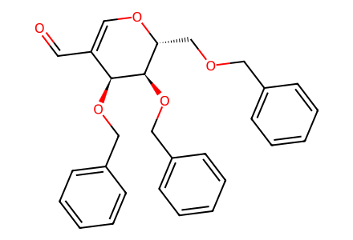
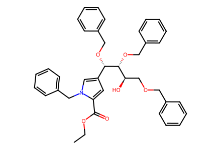
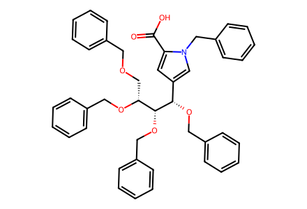
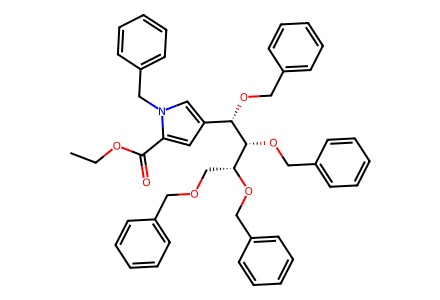
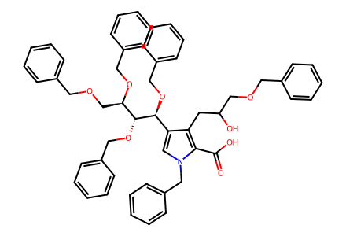
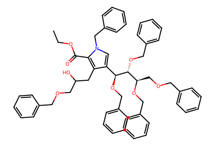
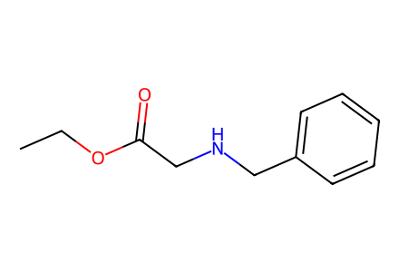

O=CC1=CO[C@H](COCc2ccccc2)[C@@H](OCc2ccccc2)[C@H]1OCc1ccccc1已核对并提取 2→4、4a→4b、6→7→8 三段路线；保护步骤、环氧化物及后段结构/转化冲突未解决，尚未形成通向终产物的完整路线。
完整 JSON · 逐步 CSV · 路线序列 · SDF · HRMS 核对
| 事件 | 分子连接 | 报告产率 | Canonical reaction SMILES |
|---|---|---|---|
| E01 | 2 + 3 → 4 | 4: 65% | CCOC(=O)CNCc1ccccc1.O=CC1=CO[C@H](COCc2ccccc2)[C@@H](OCc2ccccc2)[C@H]1OCc1ccccc1>>CCOC(=O)c1cc([C@H](OCc2ccccc2)[C@H](OCc2ccccc2)[C@H](O)COCc2ccccc2)cn1Cc1ccccc1 |
| E02 | 4a → 4b | 4b: 85% | CCOC(=O)c1cc([C@H](OCc2ccccc2)[C@H](OCc2ccccc2)[C@@H](COCc2ccccc2)OCc2ccccc2)cn1Cc1ccccc1>>O=C(O)c1cc([C@H](OCc2ccccc2)[C@H](OCc2ccccc2)[C@@H](COCc2ccccc2)OCc2ccccc2)cn1Cc1ccccc1 |
| E03 | 6 → 7 | 7: 91% | O=C(O)c1c(CC(O)COCc2ccccc2)c([C@H](OCc2ccccc2)[C@H](OCc2ccccc2)[C@@H](COCc2ccccc2)OCc2ccccc2)cn1Cc1ccccc1>>CCOC(=O)c1c(CC(O)COCc2ccccc2)c([C@H](OCc2ccccc2)[C@H](OCc2ccccc2)[C@@H](COCc2ccccc2)OCc2ccccc2)cn1Cc1ccccc1 |
| E04 | 7 → 8 | 8: 85% | CCOC(=O)c1c(CC(O)COCc2ccccc2)c([C@H](OCc2ccccc2)[C@H](OCc2ccccc2)[C@@H](COCc2ccccc2)OCc2ccccc2)cn1Cc1ccccc1>>CCOC(=O)c1c(CC(=O)COCc2ccccc2)c([C@H](OCc2ccccc2)[C@H](OCc2ccccc2)[C@@H](COCc2ccccc2)OCc2ccccc2)cn1Cc1ccccc1 |

O=CC1=CO[C@H](COCc2ccccc2)[C@@H](OCc2ccccc2)[C@H]1OCc1ccccc1
CCOC(=O)c1cc([C@H](OCc2ccccc2)[C@H](OCc2ccccc2)[C@H](O)COCc2ccccc2)cn1Cc1ccccc1
O=C(O)c1cc([C@H](OCc2ccccc2)[C@H](OCc2ccccc2)[C@@H](COCc2ccccc2)OCc2ccccc2)cn1Cc1ccccc1
CCOC(=O)c1cc([C@H](OCc2ccccc2)[C@H](OCc2ccccc2)[C@@H](COCc2ccccc2)OCc2ccccc2)cn1Cc1ccccc1
O=C(O)c1c(CC(O)COCc2ccccc2)c([C@H](OCc2ccccc2)[C@H](OCc2ccccc2)[C@@H](COCc2ccccc2)OCc2ccccc2)cn1Cc1ccccc1
CCOC(=O)c1c(CC(O)COCc2ccccc2)c([C@H](OCc2ccccc2)[C@H](OCc2ccccc2)[C@@H](COCc2ccccc2)OCc2ccccc2)cn1Cc1ccccc1CCOC(=O)c1c(CC(=O)COCc2ccccc2)c([C@H](OCc2ccccc2)[C@H](OCc2ccccc2)[C@@H](COCc2ccccc2)OCc2ccccc2)cn1Cc1ccccc1
CCOC(=O)CNCc1ccccc1